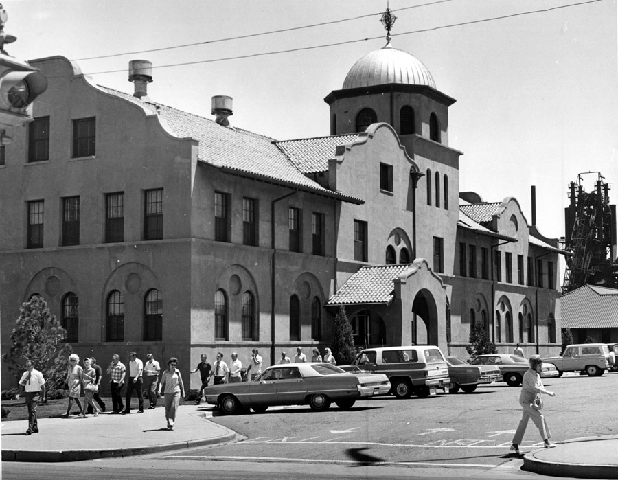
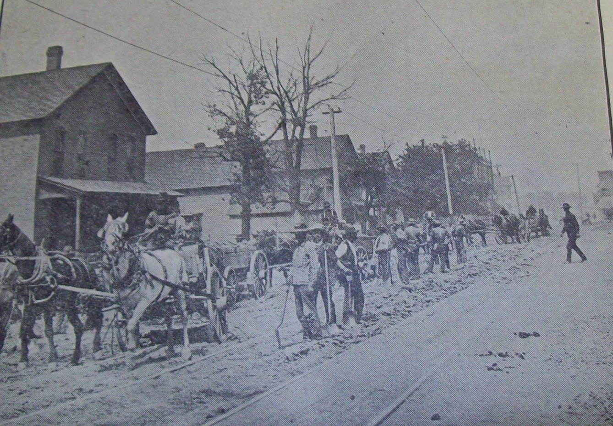
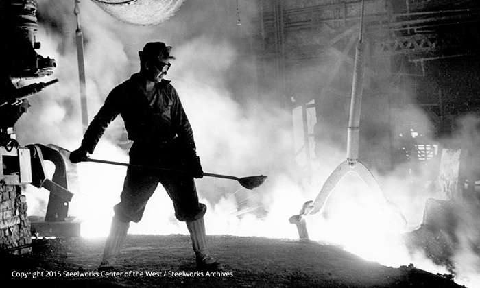
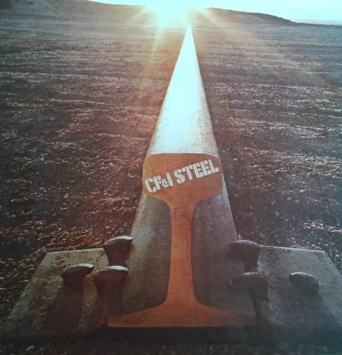
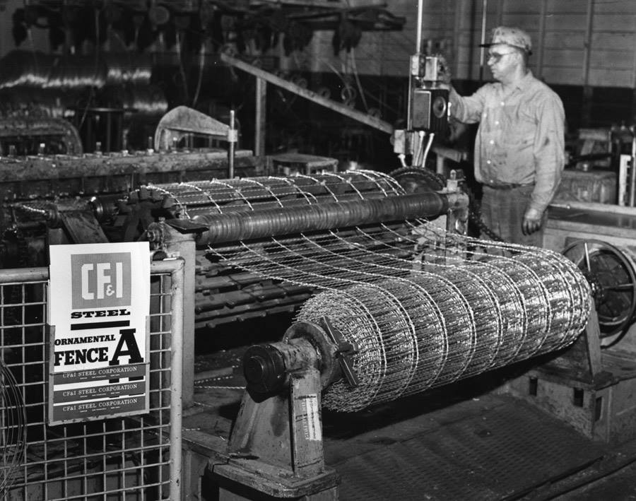
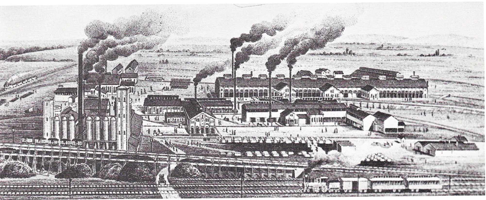
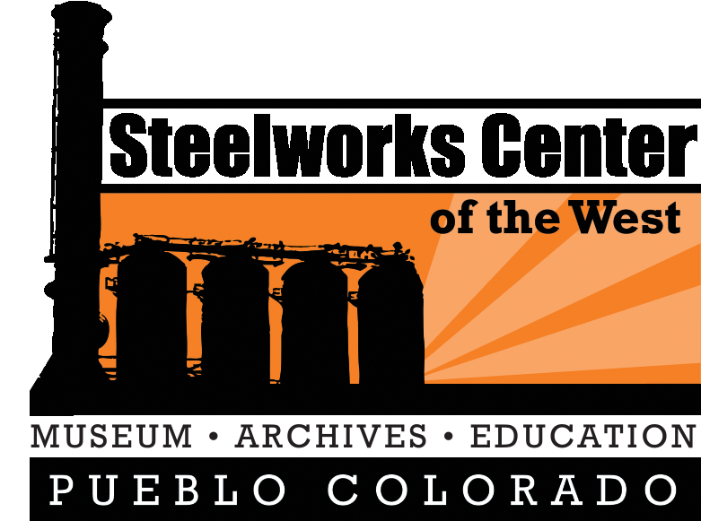

Discover the inspiring new exhibit exploring the immigrant cultures that shaped the heart and soul of Pueblo.
This opening version is designed as a clean, expandable kiosk experience for one exhibit, with room to grow over time.
Follow the main story path with interpretive content and visuals.
Browse archival imagery and brief captions.
Add audio, oral histories, and video clips.
Ground the experience in the museum’s broader mission.
This exhibit invites visitors to explore the inspiring stories and immigrant cultures that shaped the heart and soul of Pueblo.
Early industrial growth, context, and significance.
Community life, labor, and intergenerational impact.
A place for featured pieces, labels, and captions.
Industrial growth in Pueblo connected labor, transportation, materials, and ambition in ways that reshaped both the region and the people living in it. This opening story can introduce visitors to that broader context.
In the final version, this page can pair archival photography with concise storytelling, a strong quote, and optional buttons for related content.
Keep the first launch lean. A kiosk works best when visitors can understand each section quickly and choose to go deeper only when they want to.
The story of steel is also the story of neighborhoods, families, routines, sacrifice, and pride. This section gives the kiosk emotional weight and helps visitors connect with lived experience.
If you receive even one strong oral history clip or personal quote, this page can become a real anchor point for the experience.
This is also a strong place for intergenerational photographs, school connections, immigration stories, or worker memory excerpts.
Artifacts give visitors a tangible way to connect with industrial history. A few well-presented objects can do more than a long block of text.
For the event version, use a photo, title, date, and short label. Later, the same framework can expand into deeper artifact records and cross-links.
This keeps the kiosk polished now without forcing the full database or content architecture to be finished up front.
A simple image gallery is one of the fastest ways to make the kiosk feel substantial and share what's in your archive.

image description

image description

image description

image description

image description

image description
This page can support a single opening-day video, a narration track, or a short oral history and still feel intentional.
Replace this with an embedded MP4, Vimeo, YouTube, or local exhibit intro video.
Add an audio player, speaker name, and short excerpt to create a stronger personal connection.
The Steelworks Center of the West preserves and shares the historic archives, artifacts, and buildings of the Colorado Fuel and Iron Company and related activities that shaped the industrialization of the American West.
This kiosk preview is designed as a focused opening-day experience that can expand into a larger interactive system over time.
Use this section for institutional context, exhibit orientation, sponsor acknowledgment, or visitor prompts.
